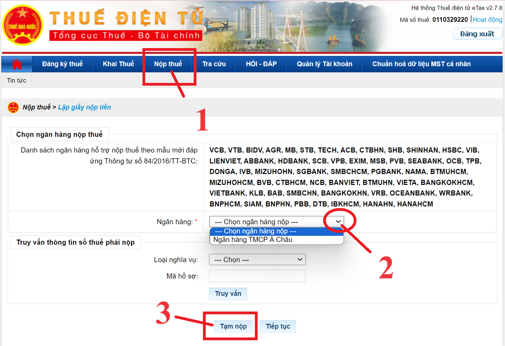
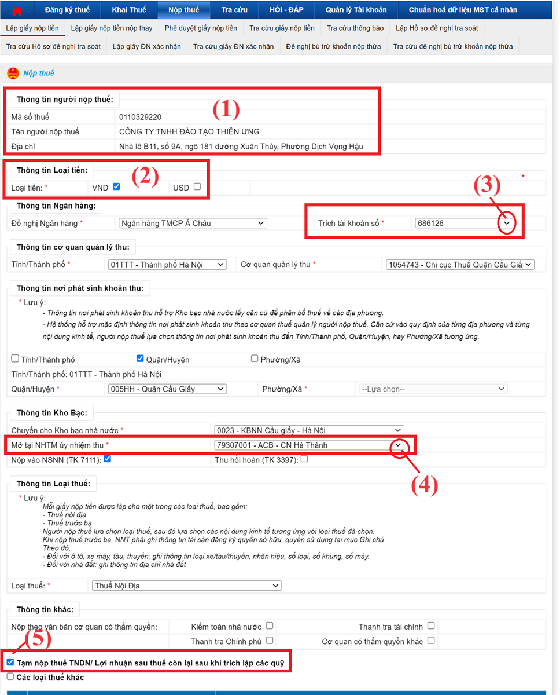
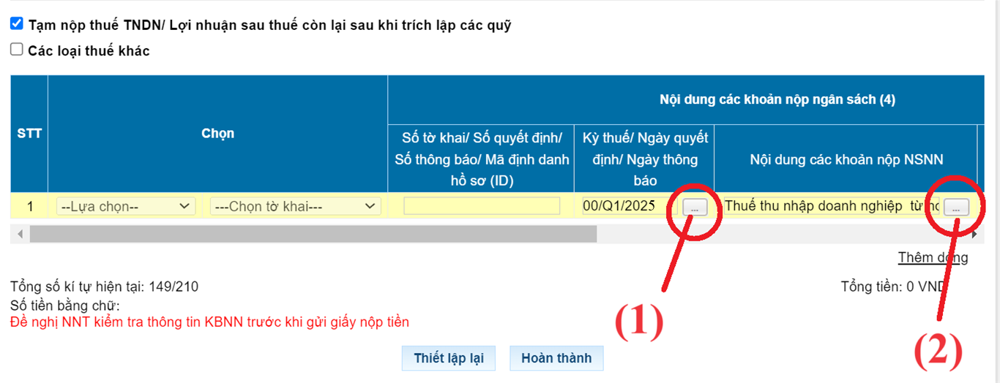
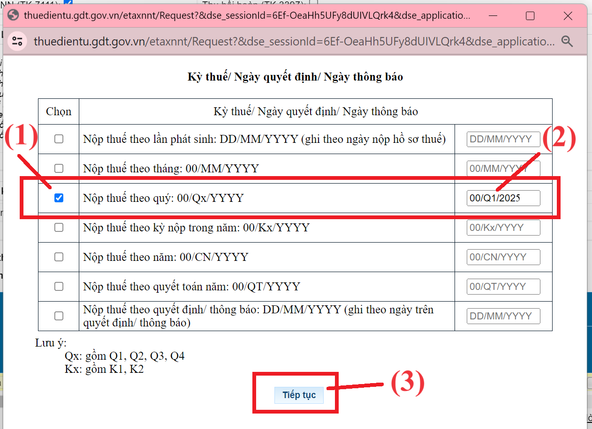
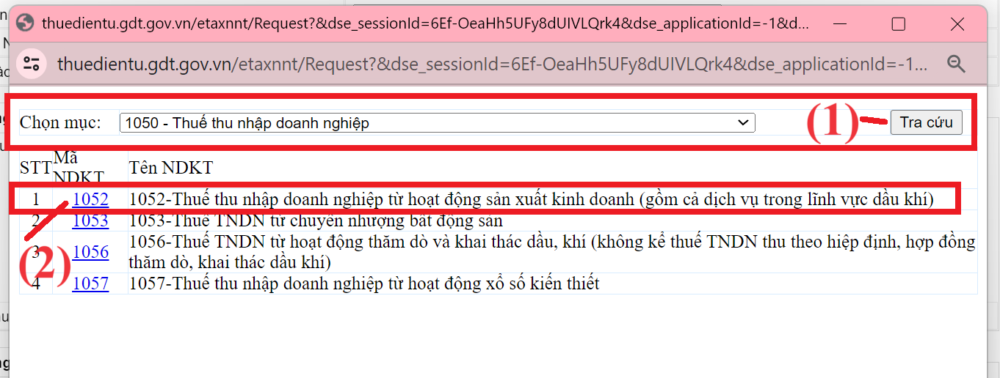
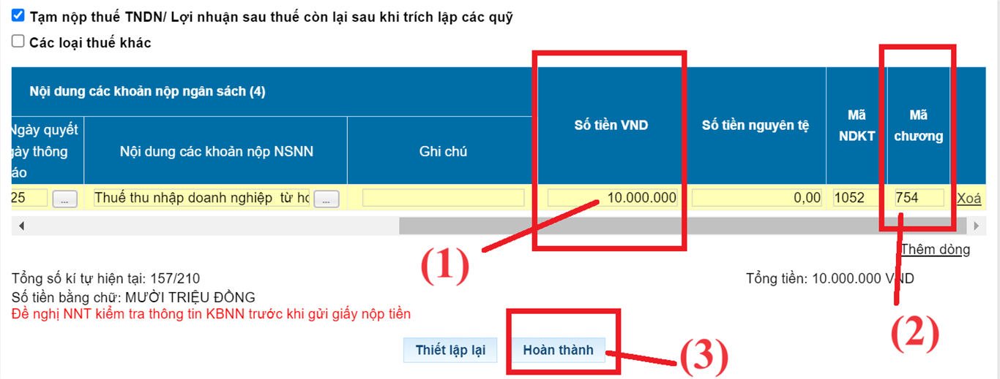
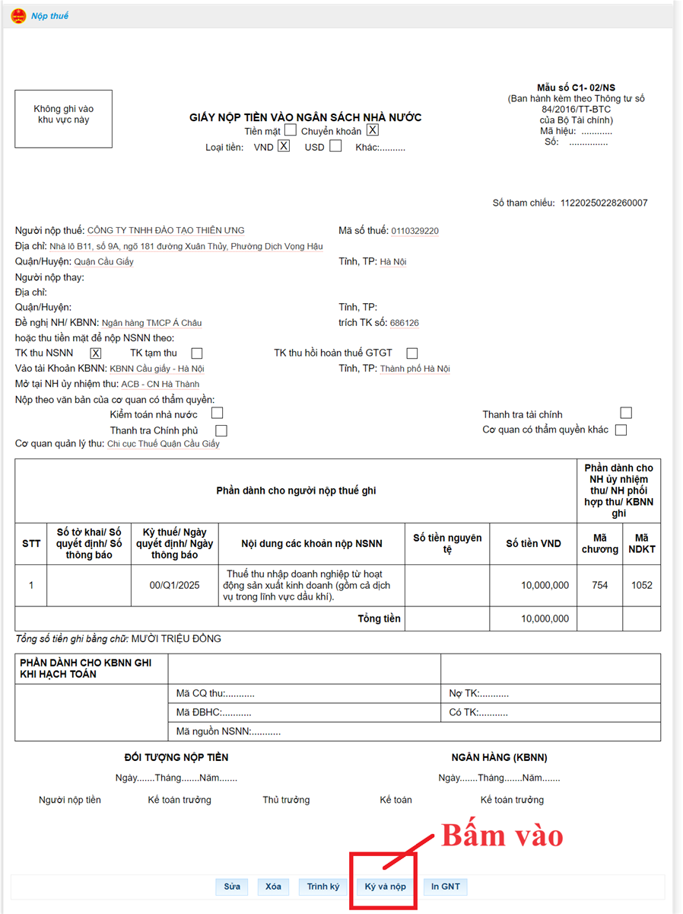
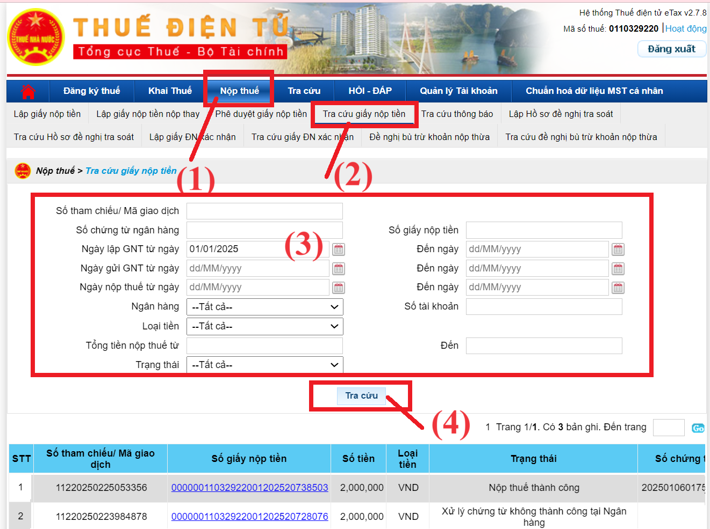

Hướng dẫn cách nộp tiền thuế thu nhập doanh nghiệp tạm tính quý qua mạng trên trang https://thuedientu.gdt.gov.vn/ mới nhất năm 2025
Hiện nay thì doanh nghiệp không phải làm tờ khai thuế TNDN tạm tính quý nữa
Doanh nghiệp căn cứ vào doanh thu, chi phí đã hạch toán ghi nhận trên sổ sách kế toán để tính ra được số thuế TNDN tạm tính của quý đó
+ Nếu việc tạm tính phát sinh ra số tiền thuế TNDN phải nộp của quý đó thì doanh nghiệp nộp số tiền tạm tính đó về NSNN
+ Nếu việc tạm tính không phát sinh ra số tiền thuế TNDN phải nộp của quý đó thì doanh nghiệp không phải nộp tiền thuế TNDN tạm tính
Chi tiết về cách tạm tính thuế TNDN theo quý các bạn xem tại đây: Cách tính thuế TNDN tạm tính quý
Quy trình nộp thuế TNDN tạm tính quý qua mạng trên trang thuế điện tử được thực hiện như sau:
Bước 1: Cắm chữ ký số (USB Token) vào máy tínhBước 2: Truy cập vào website: https://thuedientu.gdt.gov.vn
(bằng trình duyệt Internet Explorer, Firefox, Cốc cốc hoặc trình duyệt Chrome đều được)
Bước 3: Đăng nhập vào hệ thống thuế điện tử trên trang thuedientu.gdt.gov.vn
=> Tại phần Đăng nhập hệ thống thuế điện tử các bạn bấm vào "Doanh Nghiệp"
=> Sau đó bạn kéo thanh dọc lên banner của website sẽ có mục "Đăng Nhập" => các bạn bấm vào đó
=> Lúc này hệ thống yêu cầu các bạn nhập thông tin về "Tên đăng nhập" và "Mật khẩu" và Mã xác nhận
Cách xác định tài khoản đăng nhập như sau:
Đối với tên đăng nhập: Là MST hoặc MST-QL (Với MST là Mã số thuế của công ty các bạn)
Đối với tên đăng nhập: Là MST hoặc MST-QL (Với MST là Mã số thuế của công ty các bạn)
|
Tên đăng nhập Dạng
|
Sử dụng để
|
|
MST
(Ví dụ: 0113579246) |
Sử dụng được các chức năng: Khai thuế, Hoàn thuế, Tra cứu, Hỏi đáp.
|
|
MST-QL
(không phân biệt viết hoa viết thường) (Ví dụ: 0113579246-QL) |
Dùng để quản lý
Dùng được tất cả các chức năng: Khai thuế, Hoàn thuế, Nộp thuế, Tra cứu, Quản lý và phân quyền tài khoản, Hỏi đáp. |
|
MST-NT
(Ví dụ: 0113579246-NT) |
Dùng để nộp tiền thuế
|
Lưu ý với các bạn rằng:
Nếu tên đăng nhập các bạn chỉ để nguyên là MST mà không có đuôi “-QL” thì khi đăng nhập vào trang thuedientu sẽ không có chức năng Nộp thuế. Các bạn chỉ nộp được tờ khai thuế thôi, không nộp được tiền thuế, không nộp được tờ khai đăng ký MST TNCN
Bước 4: Nộp thuế theo mã định danh khoản phải nộp (ID)
Sau khi đã đăng nhập được vào hệ thống thuế điện tử trên trang thuedientu.gdt.gov.vn rồi thì thực hiện như sau:

- Bấm vào chức năng “Nộp thuế”
- Bấm chọn ngân hàng thực hiện trích tiền để nộp thuế
- Bấm vào “Tạm nộp” để thực hiện lập giấy nộp tiền thuế TNDN tạm tính quý
Sau khi bấm vào “Tạm nộp” thì hệ thống thuế điện tử sẽ hiện thị ra màn hình để lập giấy nộp tiền:
Tại đây các bạn cần thực hiện:
(1) Kiểm tra lại thông tin người nộp thuế
(2) Bấm chọn vào loại tiền nộp thuế
(3) Chọn số tài khoản trích tiền để nộp thuế
(4) Chọn ngân hàng thương mại ủy nhiệm thu (Chọn ngân hàng nào cũng được, có thể ưu tiên cùng hệ thống với ngân hàng đang thực hiện nộp thuế)
(5) Tích chọn vào ô "Tạm nộp thuế TNDN/ Lợi nhuận sau thuế còn lại sau khi trích lập các quỹ"
(2) Bấm chọn vào loại tiền nộp thuế
(3) Chọn số tài khoản trích tiền để nộp thuế
(4) Chọn ngân hàng thương mại ủy nhiệm thu (Chọn ngân hàng nào cũng được, có thể ưu tiên cùng hệ thống với ngân hàng đang thực hiện nộp thuế)
(5) Tích chọn vào ô "Tạm nộp thuế TNDN/ Lợi nhuận sau thuế còn lại sau khi trích lập các quỹ"

Sau đó thực hiện chọn Nội dung khoản nộp ngân sách như sau:

Trong đó:
(1) Chọn kỳ thuế:

(1) Bấm tích chọn vào dòng “Nộp thuế theo quý”
(2) Gõ quý và năm muốn nộp thuế TNDN tạm tính
(3) Bấm vào “Tiếp tục” để hoàn tất việc chọn kỳ nộp thuế
(2) Gõ quý và năm muốn nộp thuế TNDN tạm tính
(3) Bấm vào “Tiếp tục” để hoàn tất việc chọn kỳ nộp thuế
(2) Chọn nội dung khoản nộp NSNN:

(1) Tại phần chọn mục thì để là “1050 – Thuế thu nhập doanh nghiệp” rồi bấm vào “Tra cứu”
Sau đó mà hình sẽ hiện thị ra các mã Nội dung kinh tế để chọn
(2) Bấm chọn vào mã nội NDKT là “1052”
=> Tiếp theo là bạn thực hiện: Kéo thanh ngang dịch sang bên phải để chọn tiếp:Sau đó mà hình sẽ hiện thị ra các mã Nội dung kinh tế để chọn
(2) Bấm chọn vào mã nội NDKT là “1052”

(1) Gõ số tiền mà doanh nghiệp thực hiện nộp thuế TNDN tạm tính quý
(2) Kiểm tra lại mã chương (Nếu chưa đúng thì thực hiện sửa trực tiếp tại cột đó)
Một vài mã chương hay gặp như:
754 Kinh tế hỗn hợp ngoài quốc doanh (công ty TNHH, công ty cổ phần)
755 Doanh nghiệp tư nhân
756 Hợp tác xã
757 Hộ gia đình, cá nhân
Chi tiết và đầy đủ hơn thì các bạn xem thêm tại Phụ lục I ban hành kèm theo Thông tư 324/2016/TT-BTC (sửa đổi tại Thông tư 93/2019/TT-BTC)
755 Doanh nghiệp tư nhân
756 Hợp tác xã
757 Hộ gia đình, cá nhân
Chi tiết và đầy đủ hơn thì các bạn xem thêm tại Phụ lục I ban hành kèm theo Thông tư 324/2016/TT-BTC (sửa đổi tại Thông tư 93/2019/TT-BTC)
(3) Bấm vào “Hoàn thành” để hoàn tất việc lập giấy nộp tiền

=> Tiến hành kiểm tra lại các thông tin trên giấy nộp tiền rồi nộp qua mạng
+ Nếu muốn thay đổi thông tin trên giấy nộp tiền thì bấm vào sửa
+ Nếu các thông tin đã đúng hết rồi thì bấm vào “Ký và Nộp” sau đó tiến hành nhập mã pin chữ ký số để thực hiện ký và nộp giấy nộp tiền thuế TNDN tạm tính qua mạng
+ Nếu các thông tin đã đúng hết rồi thì bấm vào “Ký và Nộp” sau đó tiến hành nhập mã pin chữ ký số để thực hiện ký và nộp giấy nộp tiền thuế TNDN tạm tính qua mạng
=> Kiểm tra xem đã nộp thuế thành công hay chưa?
Sau khi đã ký và nộp thành công giấy nộp tiền thuế điện tử thì hệ thống thuế điện tử của Tổng Cục Thuế sẽ gửi tự động cho doanh nghiệp 2 thông báo qua mail:
+ Mail 1: THÔNG BÁO V/v: Xác nhận nộp chứng từ nộp thuế điện tử
+ Mail 2: THÔNG BÁO V/v: Xác nhận trạng thái giao dịch nộp thuế điện tử
=> Tại mail thứ 2 này thì các bạn cần kiểm tra tại dòng Trạng thái xem đã nộp thành công hay chưa
(Trường hợp trạng thái là không thành công thì hãy tìm nguyên nhân rồi thực hiện lập lại giấy nộp tiền để nộp lại)
=> Tra cứu giấy nộp tiền đã lập trên trang thuedientu:
